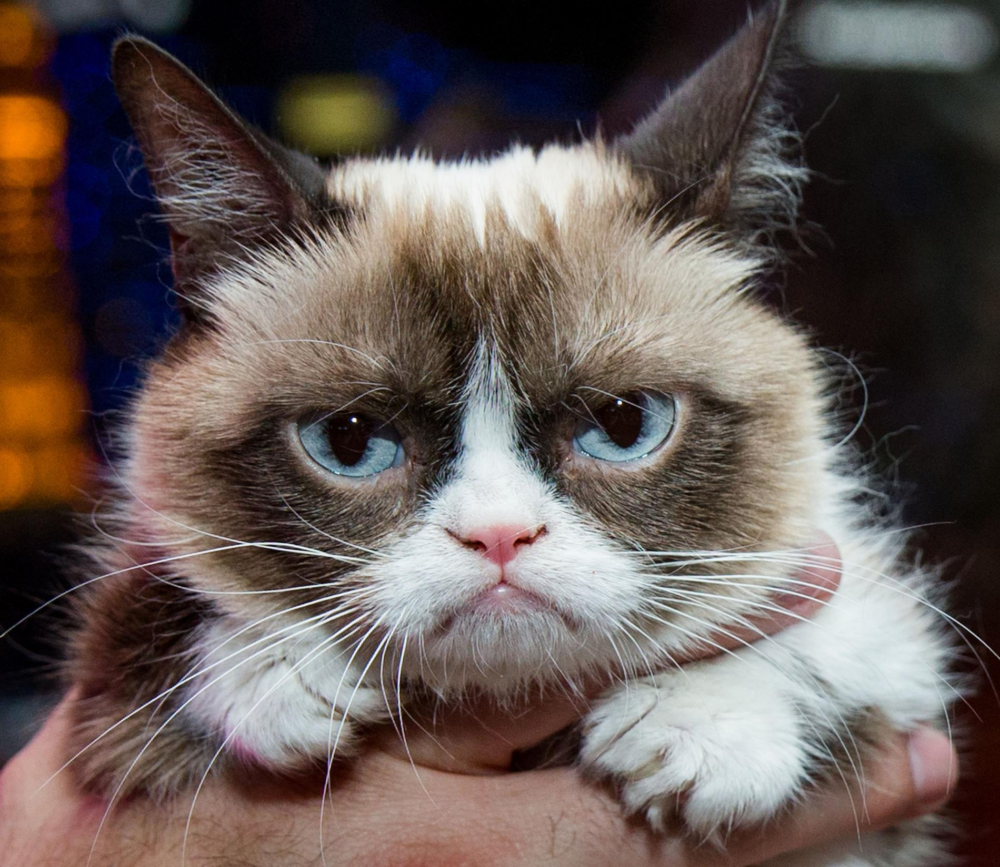
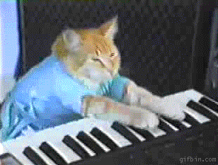
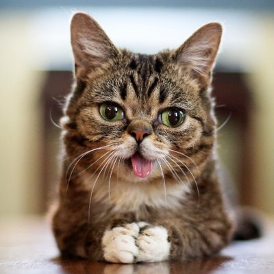
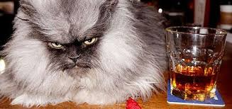
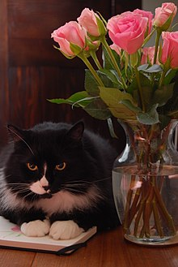
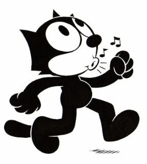

Chats célèbres
-
Grumpy Cat
Tardar Sauce, alias Grumpy Cat, née le 4 avril 2012 à Morristown en Arizona (États-Unis), est une chatte célèbre sur internet, devenue un mème Internet en raison de son expression faciale boudeuse. Littéralement, grumpy cat signifie « chat grincheux ». Selon la propriétaire de l'animal, l'expression faciale inhabituelle de Tardar Sauce est due au nanisme du félin et à la malocclusion dentaire dont il est affecté.
-
Keyboard Cat
Fatso, alias le « Keyboard Cat » (en français, le « Chat au clavier »), est un mème Internet provenant d'une vidéo humoristique créée en 1984 et ayant comme personnage principal un chat jouant du piano. Dans cette vidéo, le chat, vêtu d'un tee-shirt bleu, est vu en train de jouer un morceau de musique sur un piano électrique. En réalité, le morceau était joué par Charlie Schmidt, le propriétaire du chat, qui avait la main cachée dans le t-shirt de l'animal
-
Lil' Bub
Lil Bub (« Little Bub », « petite amie ») est une chatte naine. Elle a la particularité d'être polydactyle. Sa mâchoire inférieure ne s'est jamais complètement développée du fait de son nanisme, c'est pour cette raison que sa langue pend en permanence. Elle est également atteinte d'une maladie rare : l'ostéopétrose. Cette maladie est l'inverse de l'ostéoporose, à savoir que les os de Lil Bub se durcissent et deviennent plus imposants avec l'âge. Une équipe de scientifiques travaille au séquençage du génome de Lil Bub
-
Colonel Meow
Chat mâle persan gris au poil le plus long selon le livre Guinness des records en 2014, et célébré sur le net.
-
Henri le chat noir
Henri, le Chat Noir est une websérie de courts métrages des méditations existentielles d'un chat bicolore (un tuxedo noir et blanc) qui s'appelle Henri. La série a été créée par William Braden.
-
Maru, chat qui aime (vraiment) les boîtes

Maru (en japonais : まる, qui signifie cercle ou rond), né le 24 mai 2007, est un chat japonais de race Scottish Fold (variété straight)1 devenu populaire grâce à YouTube. L'ensemble de ses vidéos, dont beaucoup montrent l'animal en train de s'introduire dans des emballages en carton, a totalisé plus de 67 millions de vues entre juillet 2008 et novembre 20102. Chaque vidéo de Maru est vue un million de fois en moyenne et son propriétaire tient également un blog de photographies intitulé « I am Maru ». Maru est mentionné dans de nombreux médias en ligne traitant des phénomènes Internet.
-
Et en bonus... Félix (le chat)
Félix est un personnage de films muets dans les années 1920. Il est surtout connu par nos grand-parents ! Avec l'arrivée de Mickey et des films parlants, Félix est un peu tombé dans l'oubli. Aujourd'hui, Félix c'est le chat qui vend des croquettes...